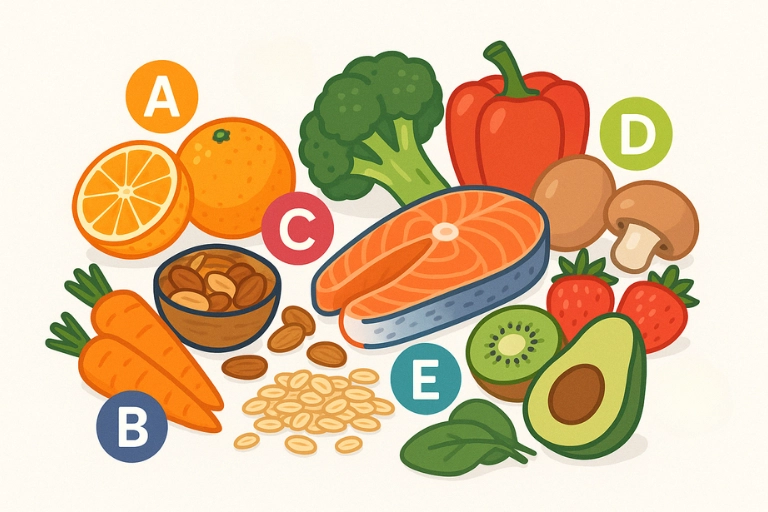

¿Qué son las Vitaminas?
- Son nutrientes orgánicos no sintetizadas por
cantidades pequeñas (miligramos o microgramos
diarios) para un metabolismo normal.
- Comúnmente actúan como coenzimas, sin
función energética ni estructural.
- Su carencia produce estados patológicos
específicos y su exceso puede ser perjudicial.
- Abundan en los alimentos, especialmente de
origen vegetal.
Se clasifican en:
- Liposolubles: A, D, E, K - Se almacenan en la grasa del cuerpo.
- Hidrosolubles: C y complejo B - Se disuelven en agua y no se almacenan.
